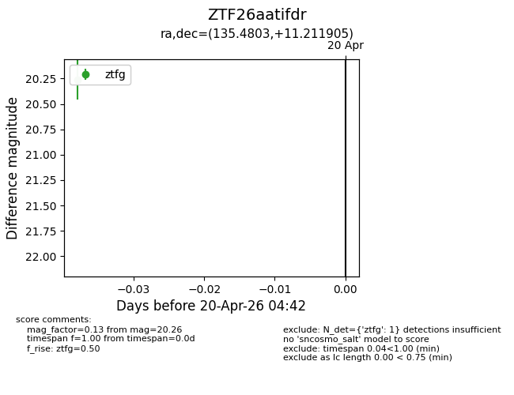
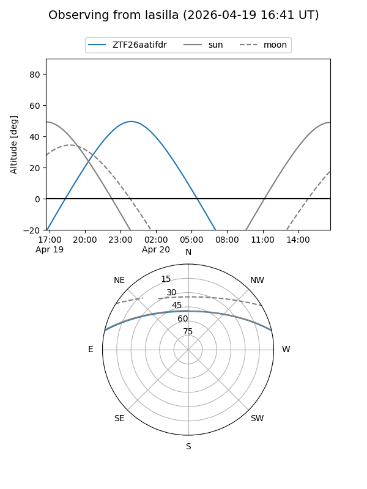
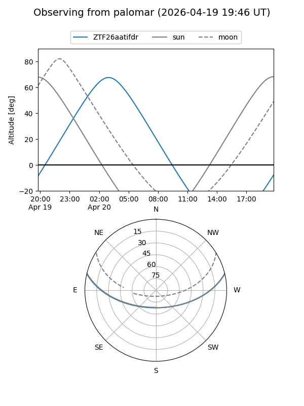

ZTF26aatifdr
Target ZTF26aatifdr at 2026-04-20 04:52
Aliases and brokers:
FINK: link
Lasair: link
ALeRCE: link
alt names
ZTF26aatifdr (ztf,fink_ztf)
Coordinates:
equatorial (ra, dec) = 135.4803,+11.21190
equatorial (HMS+DMS) = 09:01:55.26,+11:12:42.86
galactic (l, b) = (217.6420,+34.00572)
Flags:
Photometry:
last ztfg=20.26
1 ztfg detections
Lightcurve

Visibility


Additional plots